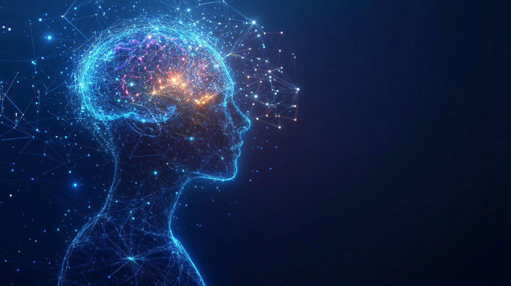

Hur Fungerar Tekniken?
Säg "AI" och du menar ofta egentligen Maskininlärning (Machine Learning, ML). Istället för att människor skriver exakta regler (till exempel "om temperaturen är över 20 grader, gör X"), "tränar" vi istället systemen i att själva upptäcka mönster i data.

Artificiella Neurala Nätverk
Den mest potenta formen av maskininlärning idag är de "Artificiella Neurala Nätverken" (Deep Learning). Dessa system är löst strukturerade med den mänskliga hjärnan som inspiration. De består av tusentals eller miljontals virtuella "neuroner" indelade i en rad olika lager.
- Input-lager: Data (exempelvis pixlar från en bild) matas in i systemet.
- Gömda lager: Varje lager gör små matematiska beräkningar för att identifiera egenskaper (exempelvis linjer, böjar, och sedan kompletta former som ansikten).
- Output-lager: Modellen ger en gissning (ex. "Detta är en bild på en katt").
Träningsprocessen (Backpropagation)
När AI:n bygger sina algoritmer gör den först väldigt många misstag. Om nätverket gissar "hund" i början när det var en "katt", då jämförs gissningen med facit. Skilnaden mellan gissning och fel leder till ett "straffvärde". Via en algoritm känd som Backpropagation letar sig detta straffvärde bakåt i nätverket och justerar miljontals små vikter tills nätverket tvingas gissa i en lite bättre riktning i nästa runda.
Kör detta miljontals och åter miljontals gånger på stora datorkluster under veckor eller månader, och du får till slut en motor som har en "intuition" över svåra abstrakta problem.